← all demos · proposals were on gate review
Amal's decisions of 2026-10-29, carried out. Real copy: 127 Janshakti paragraphs, Noto Sans Devanagari, headless Chromium. Grid assumed (A3, 12 mm margins, 4 mm gutter; GG-007).
Gate run (node scripts/measure-export.mjs, 2026-10-29 12:02 UTC): median 5.2 ms, 95th pct 6.6 ms, 20 runs, 416 lines set.
Guard added: at least 400 lines placed, so a flow() that places nothing cannot pass by being fast.
The outlier line संबंधित विभागों की अधिसूचनाओं से स्पष्ट read back from the PDF 5.26 pt short of the column's right edge (the gate-review page wrongly said "past"). Rasterised from the same PDF with pdf.js at 4x:
| Check over all 415 justified lines | Result |
|---|---|
| Ink right edge minus flow() right edge, raster | min -1.335 pt, median -0.217 pt, max 0.033 pt |
| The outlier line, raster | -0.217 pt (the median: normal side bearing) |
| Text right edge in the DOM before printing | 0.001 to 0.009 pt from flow()'s edge; outlier 0.002 pt |
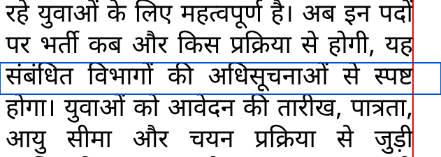
No line's ink passes the edge (worst +0.033 pt), so there is no bug to fix: the 5 pt was pdf.js giving the conjunct ष्ट a wrong width in text extraction. The lines that end furthest inside (about 1.3 pt) all end in । , whose glyph has a wide right side bearing.
| G0.pdfpos check (gate run) | Result | Need |
|---|---|---|
| Left edge, lines whose first glyph reads back | max 0.009 pt over 97.4% of lines | ≤ 0.1 pt; at least 90% checked |
| Baseline spread (PDF baseline minus flow() line top) | 0 pt (offset 7.695 pt on every line) | ≤ 0.1 pt |
| Justified right edge, 95th pct | 0.009 pt over 81.7% of justified lines; worst 5.264 pt (the pdf.js artefact above, reported only) | ≤ 0.1 pt; at least 75% checked |
| Fonts | 4 fonts, 0 not embedded, 0 not subset | all embedded and subset; at least 2 found |
| Lines missing from the PDF | 0 of 416 | 0 |
The 95th percentile cannot catch one bad line: a single real 5 pt overshoot would pass. And the gate checks this measurement script's renderer, because no export module exists yet. Both are in gate gaps (GG-018, GG-019).
Lines are re-broken greedily over words. A line fits if its words plus its spaces at 0.8x fit the column; the spare width is then shared by the spaces. "+ glyphs" also lets a line fit with words at 98% width, and scales a line's glyphs between 98% and 102% to bring its spaces inside 0.8-1.33x before stretching them further. No letter-spacing. Check of the breaker: at 1.0x it reproduces 96.8% of flow()'s lines on the reference grid (all grids: 99.6%, 96.8%, 98.6%, 98.4%, 97.2%, 97.1%).
Adopting this means changing how flow() breaks lines (it fits at 1.0x today), and export must draw glyph scaling (here CSS transform: scaleX). That is a task to plan, not done here.
| Columns | Body | Column | Lines | Median | 95th | 99th | Worst | >1.33x | >2x | >3x | >4x | |
|---|---|---|---|---|---|---|---|---|---|---|---|---|
| 4 | 9 pt | 65.3 mm | before: flow() today | 755 | 1.48 | 2.54 | 3.28 | 3.61 | 409 | 115 | 8 | 0 |
| spaces 0.8-1.33x | 740 | 1.25 | 2.34 | 3.1 | 3.61 | 259 | 64 | 7 | 0 | |||
| + glyphs 98-102% | 729 | 1.07 | 1.89 | 2.24 | 3.46 | 133 | 22 | 2 | 0 | |||
| 5 | 9 pt | 51.4 mm | before: flow() today | 955 | 1.64 | 2.94 | 3.88 | 5.67 | 590 | 231 | 39 | 6 |
| spaces 0.8-1.33x | 933 | 1.38 | 2.87 | 3.96 | 7.09 | 434 | 166 | 34 | 6 | |||
| + glyphs 98-102% | 911 | 1.22 | 2.54 | 3.73 | 6.82 | 255 | 83 | 21 | 5 | |||
| 6 | 9 pt | 42.2 mm | before: flow() today | 1167 | 1.78 | 4.03 | 5.87 | 9.94 | 784 | 404 | 141 | 53 |
| spaces 0.8-1.33x | 1136 | 1.53 | 3.5 | 5.13 | 8.26 | 609 | 292 | 91 | 27 | |||
| + glyphs 98-102% | 1115 | 1.32 | 2.92 | 4.25 | 7.67 | 415 | 176 | 41 | 13 | |||
| 4 | 10 pt | 65.3 mm | before: flow() today | 833 | 1.5 | 2.64 | 3.34 | 3.95 | 446 | 142 | 20 | 0 |
| spaces 0.8-1.33x | 814 | 1.28 | 2.45 | 3.17 | 4.88 | 313 | 89 | 14 | 1 | |||
| + glyphs 98-102% | 798 | 1.11 | 2 | 2.88 | 4.69 | 159 | 32 | 3 | 1 | |||
| 5 | 10 pt | 51.4 mm | before: flow() today | 1054 | 1.65 | 3.19 | 4.44 | 6.52 | 678 | 305 | 66 | 14 |
| spaces 0.8-1.33x | 1040 | 1.43 | 3.14 | 4.64 | 6.52 | 518 | 223 | 57 | 13 | |||
| + glyphs 98-102% | 1025 | 1.27 | 2.74 | 4.45 | 5.85 | 307 | 126 | 30 | 11 | |||
| 6 | 10 pt | 42.2 mm | before: flow() today | 1292 | 1.82 | 4.09 | 6.11 | 11.54 | 897 | 491 | 203 | 67 |
| spaces 0.8-1.33x | 1269 | 1.64 | 3.97 | 5.71 | 11.54 | 765 | 394 | 152 | 56 | |||
| + glyphs 98-102% | 1248 | 1.35 | 3.57 | 5.39 | 10.85 | 570 | 267 | 103 | 35 |
Lines = all lines set (compression fits more per line). Ratios count every line except a paragraph's last. With glyphs, 421 of 784 lines on the reference grid are scaled.
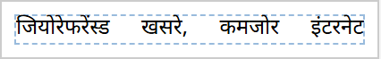
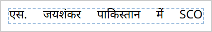
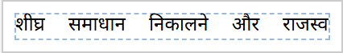
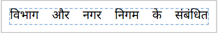
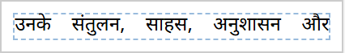
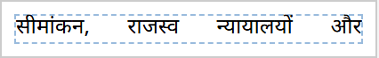
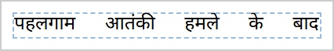
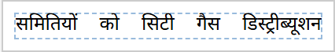
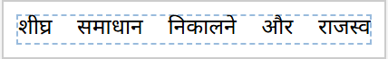
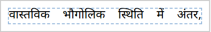
The 3 paragraphs that hold the worst lines before.
node scripts/font-coverage.mjs: every one of the 92 distinct characters in 36272 characters of copy, against each launch font and weight.
A character counts only if a face's unicode-range includes it and that served .woff2 has it in its cmap.
| Font | Weight | Missing | Characters |
|---|---|---|---|
| Noto Sans Devanagari | 400 | 0 | - |
| Noto Sans Devanagari | 700 | 0 | - |
| Noto Serif Devanagari | 400 | 0 | - |
| Noto Serif Devanagari | 700 | 0 | - |
No character in today's copy falls back. The copy is narrow (92 characters: no ₹, curly double quotes, dashes, %, ZWJ/ZWNJ or nukta forms). Checked separately with 50 common news characters added (₹ “ ” — – … % • ° × ½ | ॐ ऑ ॉ ॰ ऍ ॅ nukta letters ॥ । Devanagari digits ZWJ ZWNJ € @ # & * / : ? ! " ' + = < > [ ] _): only ½ is missing (in the Latin face's range, not in its cmap; Chromium falls back). Same result for the headline fonts Khand, Eczar, Rozha One and Kalam on the real copy: 0 missing.